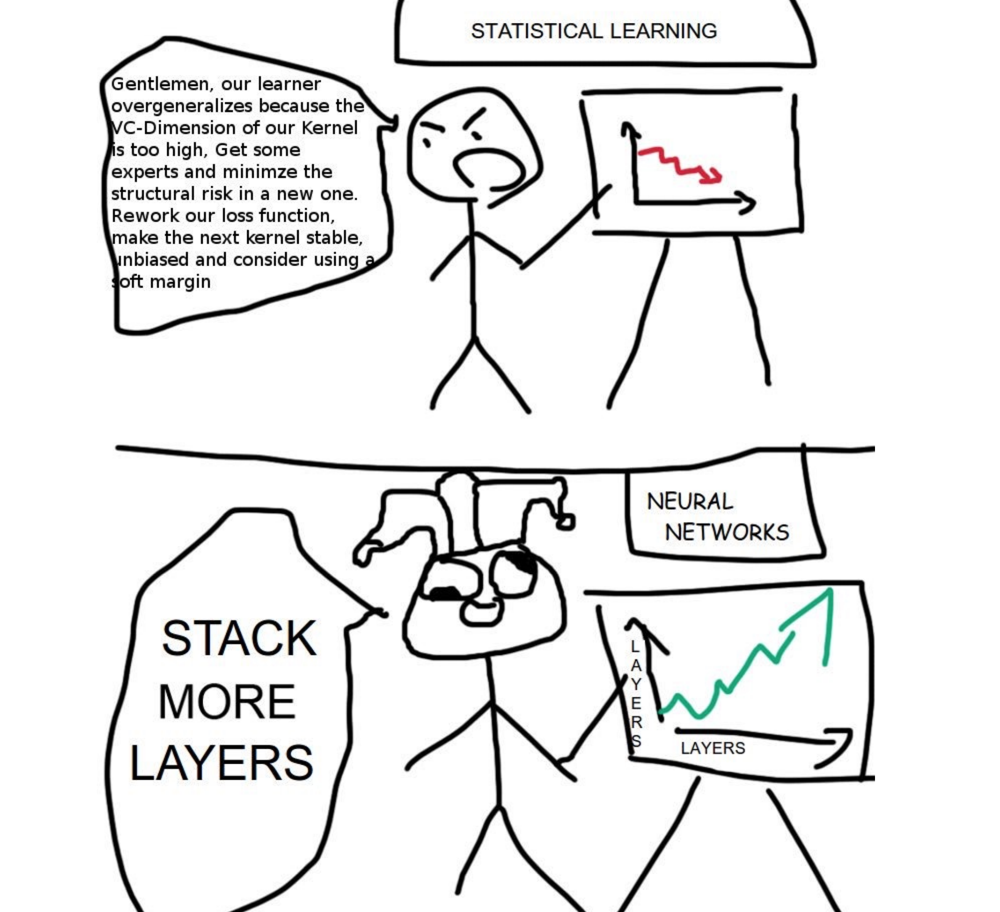

This is section 5 in my series on using Variational Inference to speed up relatively complex Bayesian models like Multilevel Regression and Poststratification without the approximation being of disastrously poor quality.
The general structure for this post and the around it will be to describe a problem with VI, and then describe how that problem can be fixed to some degree. Collectively, all the small improvements in these four posts will go a long way towards more robust variational inference. I’ll also have a grab bag at the end of other interesting ideas from the literature I think are cool, but maybe not as important or interesting to me as the 3 below.
In the last post we saw a variety of different ways importance sampling can be used to improve VI and make it more robust, from defining a tighter bound to optimize in the importance weighted ELBO, to weighting q(x) samples together efficiently to look more like p(x), to combining entirely different variational approximations together to cover different parts of the posterior with multiple importance sampling.
In this post, we’ll tackle the problem of how to define a deeply flexible variational family \mathscr{Q} that can adapt to each problem while still being easy to sample from. To do this, we’ll draw on normalizing flows, a technique for defining a composition of invertible transformations on top of a simple base distribution like a normal distribution. We’ll build our way up to using increasingly complex neural networks to define those transformations, allowing for for truly complex variational families that are problem adaptive, training as we train our variational model.
The rough plan for the series is as follows:
- Introducing the Problem- Why is VI useful, why VI can produce spherical cows
- How far does iteration on classic VI algorithms like mean-field and full-rank get us?
- Problem 1: KL-D prefers exclusive solutions; are there alternatives?
- Problem 2: Not all VI samples are of equal utility; can we weight them cleverly?
- (This post) Problem 3: How can we get deeply flexible variational approximations; are Normalizing Flows the answer?
- Problem 4: How can we know when VI is wrong? Are there useful error bounds?
- Better grounded diagnostics and workflow
A problem adaptive variational family with less tinkering?

Jumping from mean-field or full-rank Gaussians and similar distributions to neural networks feels a little… dramatic1, so I want to spend some time justifying why this is a good idea.
For VI to work well, we need something that’s still simple to sample from, but capable of, in aggregate, representing a posterior that is probably pretty complex. Certainly, some problems are amenable to the simple variational families \mathscr{Q} we’ve tried so far, but it’s worth re-emphasizing that we’re probably trying to represent something complex, and even moderate success at that using a composition of normals should be a little surprising, not the expected outcome.
If we need \mathscr{Q} to be more complex, aren’t there choices between what we’ve seen and a neural network? There’s a whole literature of them- from using mixture distributions as variational distributions to inducing some additional structure into a mean-field type solution if you have some specific knowledge about your target posterior you can use. By and large though, this type of class of solutions has been surpassed by normalizing flows in much of modern use for more complex posteriors.
Why? A first reason is described in the paper that started the normalizing flows for VI literature, Rezende and Mohamed’s Variational Inference with Normalizing Flows : making our base variational distribution more complex adds a variety of different computational costs, which add up quickly. This isn’t the most face-valid argument when I’m claiming a neural network is a good alternative, but it gets more plausible when you think through how poorly it’d scale to keep making your mixture distribution more and more complex as your posteriors get harder to handle. So this is a scalability argument- it might sound extreme to bring in a neural net, but as problems get bigger, scaling matters.
The other point I’d raise is that all these other tools aren’t very black box at all- if we can make things work with a problem-adapted version of mean-field with some structure based on the knowledge of a specific problem we have, that sounds like it gets time consuming fast. If I’m going to have to find a particular, problem-specific solution each time I want to use variational inference, that feels fragile and fiddly as well- that’s a poor user experience.
The novel idea with normalizing flows is that we’ll start with a simple base density like a normal distribution that is easy to sample from, but instead of only optimizing the parameters of that normal distribution, we’ll also use the training on our ELBO or other objective to learn a transformation that reshapes that normal distribution to look like our posterior. By having that transforming component be partially composed of a neural network, we give ourselves access to an incredibly expressive, automatically problem adaptive, and heavily scalable variant of variational inference that is quite widely used.
And if the approximation isn’t expressive enough? Deep Learning researchers have an unfussy, general purpose innovation for that: MORE LAYERS!2

What is a normalizing flow?
A normalizing flow transforms a simple base density into a complex one through a sequence of invertible transformations. By stacking more and more of these invertible transformations (having the density “flow” through them), we can create arbitrarily complex distributions that remain valid probability distributions. Since it isn’t universal in the flows literature, let me be explicit that I’ll consider “forward” to be the direction flowing from the base density to the posterior, and the “backward” or “normalizing” direction as towards the base density.

If we have a random variable x, with distribution q(x), some function f with an inverse f^{-1} = g, g \circ f(x) = x, then the distribution of the result of one iteration of x through, q^\prime(x) is:
q\prime(z) = q(x) \lvert det \frac{\partial f^{-1}}{\partial x^\prime} \rvert = q(x) \lvert \frac{\partial f}{\partial x} \rvert^{-1} I won’t derive this identity3, but it follows from the chain rule and the properties of Jacobians of invertible functions.
The real power comes in here when we see that these transformations stack. If we’ve got a chain of transformations (eg f_K(...(f_2f_1(x)):
x_K = f(x) \circ ... \circ f_2 \circ f_1(x_0)
then the resulting density q_K(x) looks like:
ln q_K (x_K) = lnq_0(x_0) - \sum \limits_{K = 1}\limits^{K} ln \lvert \frac{\partial f_k}{\partial x_{k-1}} \rvert^{-1}
Neat, and surprisingly simple! If the terms above are all easy to calculate, we can very efficiently stack a bunch of these transformations and make an expressive model.
Normalizing Flows for variational inference versus other applications
One source of confusion when I was learning about normalizing flows for variational inference was that variational inference makes up a fairly small proportion of the use cases for normalizing flows, and thus the academic literature and online discussion. More common applications include density estimation, image generation, representation learning, and reinforcement learning. In addition to making specifically applicable discussions harder to find, often resources will make strong claims about properties of a given flow structure, that really only holding in some subset of the above applications4.
By taking a second to explain this crisply and compare different application’s needs, hopefully I can save you some confusion and make engaging with the broader literature easier.
To start, consider the relevant operations we’ve introduced so far:
- computing f, that is pushing a sample through the transformations
- computing g, f’s inverse which undoes the manipulations
- computing the (log) determinant of the Jacobian
1 and 3 definitely need to be efficient for our use case, since we need to be able to sample and push through using the formula above efficiently to calculate an ELBO and train our model. 2 is where things get more subtle: we definitely need f to be invertible, since our formulas above are dependent on a property of Jacobians of invertible functions. But we don’t actually really need to explicitly compute g for variational inference. Even knowing the inverse exists but not having a formula might be fine for us!
Contrast this with density estimation, where the goal would not to sample from the distribution, but instead to estimate the density. In this case, most of the time would be spent going in the opposite direction, so that they can evaluate the log-likliehood of the data, and maximize it to improve the model5. The need for an expressive transformation of densities unite these two cases, but the goal is quite different!
This level of goal disagreement also shows it face in what direction papers choose to call forward: Most papers outside of variational inference applications consider forward to be the opposite of what I do here, the direction towards the base density, the “normalizing” direction.
For our use, hopefully this short digression has clarified which operations we need to be fast versus just exist. If you dive deeper into further work on normalizing flows, hopefully recognizing there are two different ways to point this thing helps you more quickly orient yourself to how other work describe flows.
How to train your neural net
Now, let’s turn to how we actually fit a normalizing flow. Since this would be a bit hard to grok a code presentation if I took advantage of the full flexibility and abstraction that something like vistan provides, before heading into general purpose tools I’ll build a bit more explicit implementation of a simpler flow called a planar flow from scratch in PyTorch for illustration.
In this section, I’ll define conceptually how we’re fitting the model, and build out a fun target distribution and loss`- since I expect many people reading this may moderately new to PyTorch, I’ll explain in detail than normal what each operation is doing and why we need it.
A basic flow
What more complicated NNs look like
Conclusion
Footnotes
It also almost has a bit of “no brain no pain” ML guy energy, in the sense that we’re really pulling out the biggest algorithm possible. It really is a funny trajectory to me to go from “I’d like to still be Bayesian, but avoid MCMC because it’s slow” to “screw subtle design, let’s throw a NN at it”.↩︎
This is mostly a joke, but it really is a tremendous convenience that there’s such a straight forward knob to turn for “expressivity” in this context. We’ll get into the ways that isn’t completely true soon, but NNs provide fantastic convenience in terms of workflow for improving model flexibility.↩︎
You can see it in the original Normalizing Flows paper linked above, or combined with a nice matrix calc review by Lilian Weng. As a more general note, since this is a common topic on a few different talented people’s blogs, I’ll try to focus on covering material I think I can provide more intuition for, or that are most relevant for variational inference.↩︎
A great example of this is Lilian Weng’s NF walkthrough which I reccomended above- It has a fantastic review of the needed linear algebra and covers a lot of different flow types, but is a bit overly general about what properties are most desirable in a flow, and therefore initially a bit fuzzy on the value different flows have.↩︎
Deriving precisely how this works would take us too far afield, but see Kobyzev et al. (2020) if you’re interested. It’s a great review paper that does a lot of work to recognize there are multiple different possible applications of normalizing flows, and thus different notations and framings that they very successfully bridge. are many different implicit and explicit objectives and↩︎
Reuse
Citation
@online{timm2023,
author = {Andy Timm},
title = {Variational {Inference} for {MRP} with {Reliable} {Posterior}
{Distributions}},
date = {2023-05-27},
url = {https://andytimm.github.io/variational_mrp_pt5.html},
langid = {en}
}